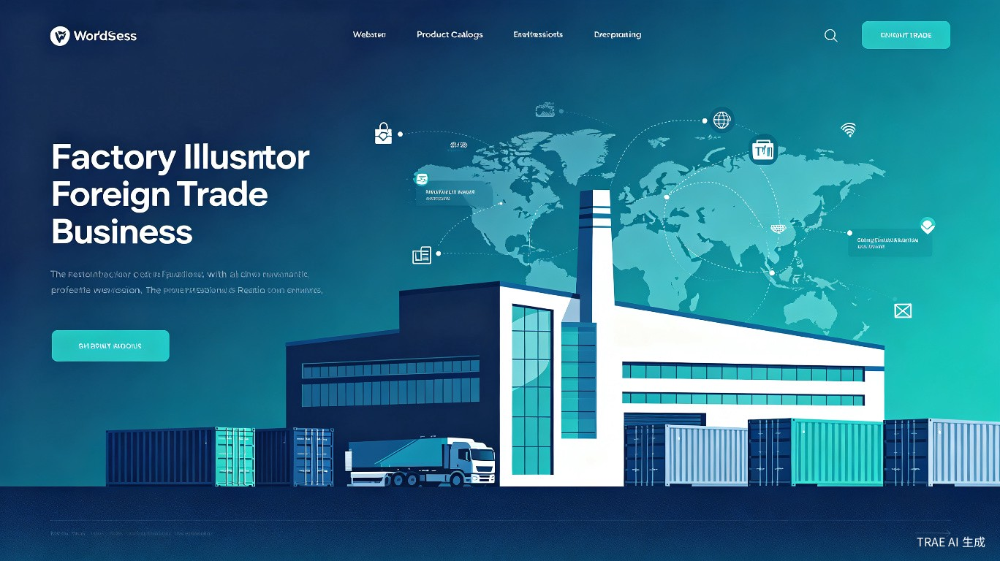
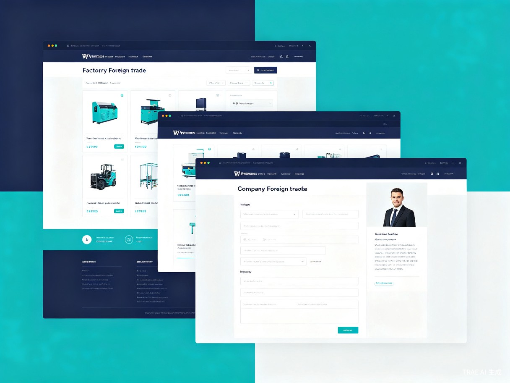

工厂外贸通（FactoryTrade Pro） — 工厂外贸专用 WordPress Theme 模板。
中国有超过 40 万家中小型出口制造工厂，其中超过 70% 没有自己的英文官网。这些工厂高度依赖阿里巴巴国际站等第三方平台获取海外订单，平台佣金逐年上涨、流量分配被算法控制，工厂缺乏自主获客能力。同时，市面上现有的 WordPress 外贸主题要么过于通用（适合博客或企业站，不适合工厂产品展示），要么价格昂贵（动辄数百美元），且需要专业技术人员才能完成部署和内容填充。
灵感来源于对广东珠三角和浙江长三角大量中小型工厂的实地调研。许多工厂老板表示："我知道要有自己的网站，但找人做要花一万多，而且做出来不好看，我自己又不会弄。" WordPress 占据全球网站建站市场 43% 的份额[1]，拥有庞大的插件生态和社区支持，是工厂自建网站的最佳选择。然而，目前市面上缺少一款真正为工厂外贸场景量身定制的 WordPress 主题——一个开箱即用、零代码门槛、专注产品展示与询盘转化的解决方案。
一款 WordPress Theme 模板（网站主题），安装到 WordPress 后台即可使用，提供工厂产品目录展示、多语言切换、询盘表单、SEO 优化等核心功能，配套可视化拖拽编辑器，工厂业务员无需写一行代码即可完成网站搭建与日常维护。

年出口额在 50 万至 5000 万美元之间的制造企业负责人，希望降低获客成本、建立品牌形象，但缺乏技术团队。
负责海外市场开拓的业务人员，需要一个专业的英文产品展示平台来发送给潜在客户，提升询盘转化率。
刚从 B2B 平台转型做独立站的工厂团队，预算有限，需要高性价比的建站方案。
为工厂客户提供建站服务的代理商或自由职业者，需要一个专业的工厂主题模板来提升交付效率和客户满意度。
| 痛点编号 | 痛点描述 | 影响程度 | 现有解决方案的不足 |
|---|---|---|---|
| P1 | 没有英文官网，海外客户无法验证工厂真实性 | 致命 | 第三方平台页面千篇一律，无法体现工厂品牌特色 |
| P2 | 找人建站成本高（1-3万元），周期长（2-4周） | 严重 | 定制开发报价高，模板站质量差，两者难以兼顾 |
| P3 | 产品更新频繁，每次改版都要找技术人员 | 严重 | 现有主题后台操作复杂，非技术人员难以独立维护 |
| P4 | 不懂 SEO，网站在 Google 上搜不到 | 中等 | 通用主题的 SEO 设置分散，缺乏外贸行业针对性优化 |
| P5 | 需要多语言支持（英语、西班牙语、阿拉伯语等） | 中等 | 多语言插件配置复杂，翻译质量参差不齐 |
| P6 | 移动端体验差，海外客户多使用手机浏览 | 中等 | 老旧主题未做移动端适配，跳出率极高 |
支持按分类、材质、规格等多维度组织产品。每个产品页面包含高清图片画廊、技术参数表、下载中心（PDF 目录/证书）、相关产品推荐。支持批量导入产品数据。
内置多字段询盘表单（姓名、公司、邮箱、电话、国家、感兴趣的产品、采购数量、留言），支持表单字段自定义。询盘自动发送至指定邮箱，后台统一管理。
深度集成 WPML 和 Polylang 多语言插件，提供语言切换器组件。预制英语、西班牙语、法语、阿拉伯语、中文 5 种语言包，一键切换无需手动翻译页面结构。
专门的"关于工厂"页面模板：工厂全景图、生产线照片、质检流程、资质证书展示、团队介绍、合作客户 Logo 墙。用视觉化方式建立海外客户信任。
内置 Schema Markup 结构化数据（产品、组织、评价），自动生成 sitemap，深度集成 Yoast SEO / Rank Math，预制外贸行业高频搜索关键词库，帮助网站快速获得 Google 排名。
基于 Elementor / Gutenberg 的深度定制组件：产品卡片、询盘表单、证书轮播、视频展示、数据统计等 20+ 专属组件。所见即所得，拖拽即可完成页面搭建。
全站 100% 响应式设计，针对手机端优化了产品浏览体验、询盘表单交互和导航菜单。支持 Google AMP 加速移动页面，提升移动端加载速度和搜索排名。
内置 Google Analytics 4 和 Meta Pixel 埋点，预制外贸行业关键指标看板（访客来源国家、热门产品页、询盘转化漏斗），帮助工厂精准掌握网站运营数据。
| 技术层 | 选型方案 | 选型理由 |
|---|---|---|
| CMS 框架 | WordPress 6.x | 全球占有率 43%，生态最成熟，插件资源丰富 |
| 主题框架 | 自定义 Theme（基于 Underscores） | 轻量、规范、符合 WordPress 编码标准 |
| 前端样式 | Tailwind CSS + 自定义 CSS 变量 | 原子化 CSS 提升开发效率，变量系统便于主题定制 |
| 页面构建 | Elementor + Gutenberg Block | 兼顾可视化编辑和块编辑器两种交互模式 |
| 多语言 | WPML / Polylang | WordPress 生态中最成熟的多语言解决方案 |
| SEO | Yoast SEO / Rank Math | 行业标准的 WordPress SEO 插件 |
| 性能优化 | LazyLoad + WebP + CDN | 确保海外访问速度，降低跳出率 |
完成 50+ 家工厂用户深度访谈，输出用户画像和需求优先级矩阵。使用 Figma 完成主题 UI 原型设计，包含首页、产品列表页、产品详情页、关于我们、联系我们共 5 个核心页面。
基于 Underscores 搭建主题框架，开发产品目录 CPT（自定义文章类型）、询盘表单系统、工厂展示模块。完成 Elementor 专属组件开发（产品卡片、证书轮播、数据统计等）。
深度集成 WPML 多语言插件，预制 5 种语言包。实现 Schema Markup 结构化数据自动注入，完成 sitemap 自动生成和 Google Search Console 集成。
全面性能优化：图片 LazyLoad、WebP 自动转换、CSS/JS 合并压缩、CDN 配置。完成 Google PageSpeed Insights 移动端评分 90+ 的目标。进行跨浏览器兼容性测试。
编写完整的安装指南、使用手册和视频教程。在 WordPress.org Theme Directory 提交审核，同步上线官方网站和演示站点。
| 对比维度 | 工厂外贸通（本项目） | Flavor/Flavflavor | Avada | Astra Pro | 定制开发 |
|---|---|---|---|---|---|
| 定位 | 工厂外贸专用 | 通用企业站 | 通用多用途 | 通用轻量 | 完全定制 |
| 价格 | $69（一次性） | $59/年 | $69/年 | $49/年 | $1,000-3,000+ |
| 产品目录功能 | 深度定制 | 基础 | 需插件 | 需插件 | 按需开发 |
| 询盘表单 | 内置专业版 | 需第三方 | 需第三方 | 需第三方 | 按需开发 |
| 多语言支持 | 预制 5 种语言 | 需手动配置 | 需手动配置 | 需手动配置 | 按需开发 |
| SEO 优化 | 外贸行业深度优化 | 通用 SEO | 通用 SEO | 通用 SEO | 按需开发 |
| 上手难度 | 零代码门槛 | 中等 | 较高 | 中等 | 无需上手 |
| 部署时间 | 30 分钟 | 2-3 天 | 3-5 天 | 1-2 天 | 2-4 周 |
核心竞争优势：工厂外贸通是市面上唯一一款专为工厂外贸场景设计的 WordPress 主题。与通用主题相比，我们预制了工厂行业专属功能（产品参数表、证书展示、询盘表单），省去了大量插件安装和配置工作；与定制开发相比，我们以不到定制开发 5% 的价格提供了 80% 以上的功能覆盖。
传统定制建站费用 1-3 万元，使用工厂外贸通仅需 69 美元（约 500 元人民币），成本降低超过 90%。让每一家中小型工厂都拥有自己的英文官网成为可能。
从购买到网站上线仅需 30 分钟，而传统定制开发需要 2-4 周。工厂可以快速响应市场变化，第一时间将新产品推向海外客户。
通过 Google SEO 自然流量获取询盘，摆脱对高佣金 B2B 平台的依赖。据行业数据，独立站询盘成本仅为平台获客成本的 1/3。
主题一次性销售 + 年度高级支持订阅 + 定制化增值服务，形成多元化收入来源。预计上线首年可覆盖 5000+ 家工厂用户。
赋能中国制造业出海：帮助 40 万+ 中小型工厂建立自主数字营销能力，从"被动等待平台分配流量"转变为"主动获取海外客户"。这不仅降低了工厂的经营成本，更提升了中国制造业在国际市场的品牌形象和议价能力。在当前国际贸易环境复杂多变的背景下，工厂拥有自己的英文官网是构建数字化出海基础设施的关键一步。
工厂外贸通是一款精准定位中小型出口工厂的 WordPress 主题模板。它以 $69 的一次性买断价格，提供了传统定制建站 80% 以上的功能覆盖，包括产品目录系统、智能询盘表单、多语言切换、SEO 深度优化、可视化拖拽编辑等八大核心模块。
这个项目的核心价值在于：让技术门槛不再是工厂出海的障碍。任何一家工厂，无论是否有技术团队，都能在 30 分钟内上线一个专业级的英文产品展示网站，开始通过 Google 自然搜索获取海外客户询盘，摆脱对高佣金 B2B 平台的依赖，真正掌握自己的数字营销命运。
我们相信，每一家中国工厂都值得拥有一个属于自己的英文官网。工厂外贸通，就是让这件事变得简单、便宜、高效的那把钥匙。